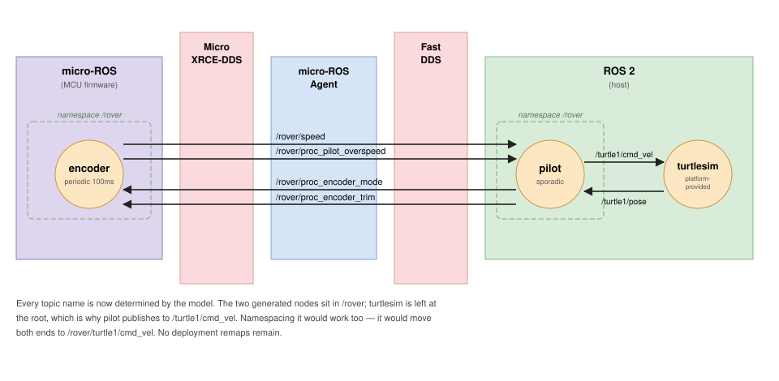

Chapter 2 of 4 in HAMR ROS 2 Development.
The system in ROS 2 Component Development
generates and runs, but two of its edges are held together by a deployment
remap. pilot.cmdVel publishes on proc_pilot_cmdVel while turtlesim listens
on /turtle1/cmd_vel, and a remap rule reconciles them outside the model where
nothing checks it.
This chapter takes the same system and moves that binding into the model. It adds namespaces, explicit topic names, and a proper declaration of turtlesim, after which both remaps disappear and the turtlesim edges come under the same generation-time checking as every other connection.
We assume you have read the previous chapter. The model here is its naming
variant: same threads, same ports, same dispatch semantics.
The complete source for this variant — all three .sysml files — is on the ROS 2 Example Models page.

Two things changed from the structure variant:
-
encoderandpilotare placed in arovernamespace, andencoder.speedcarries an explicit topic name. Every other topic keeps its path-derived default, so the two forms sit side by side — see Where Topic Names Come From and Definition Site or Usage Site. -
turtlesim is explicitly modeled as a platform-provided component, so
pilot.cmdVelandpilot.poseare real connections rather than unconnected boundary ports. That is what removes both deployment remaps and brings the two turtlesim edges under generation-time checking — see Platform-Provided Components.
Where Topic Names Come From
A HAMR port is not a ROS topic. The topic is what a port is realized by, and its name is decided in one of two ways.
By default, from the port path. If nothing in the model says otherwise, the
name is derived from the path of the receiving port. That is why the encoder
in the previous chapter published on proc_pilot_speed — the name describes the
consumer, not the producer. Which end supplies that default can be reversed; see
Which End Supplies the Default.
From the model, when you say so. The Ros_Topic_Name property on a port
names its topic explicitly, and Ros_Namespace on a component places the node —
and therefore its relative topic names — inside a namespace.
Both are HAMR extensions supplied by the SysMLv2 libraries, so
HAMR_AADL_Preview must be imported before HAMR:
private import HAMR_AADL_Preview::*;
private import HAMR::*;
HAMR_AADL_Preview is a separate, opt-in package because it contains
definitions that older versions of Sireum do not support. Its port definitions
extend the AADL ones with the ROS vocabulary, and they shadow the same-named
definitions that HAMR brings in — which is why the order matters.
Warning
With those imports reversed, unqualified DataPort / EventDataPort /
EventPort resolve to the plain AADL definitions, which do not carry
Ros_Topic_Name. The attribute is then silently dropped: the model still
type-checks and still instantiates, but the generated topic names quietly revert
to their path-derived defaults.
Relative and Absolute Names
A topic name that begins with / is absolute and is used as written. Anything
else is relative and composes with the namespace of the node that declares
it.
That makes the declaring end significant, which is easiest to see in the two cases this model contains.
part encoder : Encoder {
attribute :>> Ros_Namespace = "rover";
port :>> speed {
attribute :>> Ros_Topic_Name = "speed";
}
}
speed is relative, and the encoder is in rover, so the topic resolves to
/rover/speed. The pilot declares nothing on its own speed port; it is bound
to that resolved name because the two are connected in the model. Only one end
of a connection needs to supply a topic name — and if both do, the two must
resolve to the same topic or generation fails.
Contrast turtlesim, which is not namespaced:
port cmdVel : DataPort {
in :>> type : geometry_msgs::Twist;
attribute :>> Ros_Topic_Name = "turtle1/cmd_vel";
}
Also relative, but declared by a node with no namespace, so it resolves to
/turtle1/cmd_vel. The pilot publishes there even though the pilot is in
/rover — the namespace belongs to the node that declared the name, and does
not follow the topic to its peer.
turtle is left un-namespaced deliberately, but not out of necessity. Giving it
Ros_Namespace = "rover" would work: the launch entry would place the node in
that namespace, its relative names would resolve to /rover/turtle1/cmd_vel and
/rover/turtle1/pose, and the pilot — bound to the resolved names — would follow
it there. Ros_Namespace applies to a platform-provided component like any
other.
Leaving it at the root is a modeling choice: it is how a stock turtlesim is normally run, so the model matches what an operator would actually launch.
Per-Edge Resolution
Because names are resolved per connection rather than per port, a node can end up using topics it never mentions. The pilot is the extreme case — it declares nothing at all:
| Pilot port | Resolved topic | Decided by |
|---|---|---|
speed |
/rover/speed |
encoder.speed’s declared name |
cmdVel |
/turtle1/cmd_vel |
turtle.cmdVel’s declared name |
pose |
/turtle1/pose |
turtle.pose’s declared name |
overspeed |
/rover/proc_pilot_overspeed |
nobody — path-derived default |
mode, trim |
/rover/proc_encoder_mode, …_trim |
nobody — path-derived default |
Every named topic the pilot uses was decided by its peer. That is worth internalising before debugging a name you did not expect: look at the other end of the connection first.
The table lists resolved names, which is what runs — but the generated code does not always contain them literally. A path-derived default is emitted relative, so it composes with whatever namespace the node is placed in:
proc_pilot_overspeed_subscription_ = this->create_subscription<...>(
"proc_pilot_overspeed", // relative -> /rover/proc_pilot_overspeed
whereas a name taken from a peer is emitted absolute, because the pilot is bound to the resolved form rather than re-resolving it under its own namespace:
proc_pilot_cmdVel_publisher_ = this->create_publisher<...>(
"/turtle1/cmd_vel", // absolute -- does not become /rover/turtle1/...
Note also that naming is per port, not all-or-nothing. overspeed, mode
and trim declare nothing anywhere and keep path-derived defaults, sitting
alongside ports that are explicitly named. There is no mode to switch on.
Which End Supplies the Default
The default derivation has a direction, and it can be reversed for the whole
system with --invert-topic-binding.
| topic named from | ||
|---|---|---|
| default | the receiving port | fanOut_consumer1_myInteger |
--invert-topic-binding |
the producing port | fanOut_producer_myInteger |
This is not only cosmetic. Which end names the topic decides where the multiplicity goes when a connection is not one-to-one, because the end that does not name it needs one endpoint per peer.
Fan-out — one producer, two consumers:
// default: the producer creates one publisher per consumer topic
fanOut_producer_myInteger_publisher_1 = this->create_publisher<...>("fanOut_consumer1_myInteger", 1);
fanOut_producer_myInteger_publisher_2 = this->create_publisher<...>("fanOut_consumer2_myInteger", 1);
// inverted: one publisher, and both consumers subscribe to it
fanOut_producer_myInteger_publisher_ = this->create_publisher<...>("fanOut_producer_myInteger", 1);
Fan-in — two producers, one consumer — is the mirror image:
| producers publish to | consumer subscribes to | |
|---|---|---|
| default | fanIn_consumer_myInteger (both) |
that one topic |
| inverted | fanIn_producer1_myInteger, fanIn_producer2_myInteger |
both, separately |
So the default keeps consumers simple and the inverted form keeps producers simple. Neither is more correct; it is a question of which side of your system you would rather have a single well-known topic name on.
Note
--invert-topic-binding affects only derived defaults. A port carrying an
explicit Ros_Topic_Name is unaffected, because resolution consults declared
names first and derives only when neither end has one. Inverting a fully named
system changes nothing.
It is also a whole-system switch, not a per-port choice. If you need one edge to differ, name that edge explicitly rather than inverting everything.
Definition Site or Usage Site
A property can be attached where a component is defined or where it is used. The distinction is not cosmetic, and this model uses both deliberately.
At the usage site goes anything that is a deployment choice:
part encoder : Encoder {
attribute :>> Ros_Namespace = "rover"; // deployment configuration
port :>> speed { attribute :>> Ros_Topic_Name = "speed"; }
}
The Encoder definition stays deployment-neutral, so the same definition can be
instantiated into a different namespace elsewhere.
At the definition site goes anything that is a fact about the thing itself:
part def turtlesim_node :> Thread {
port cmdVel : DataPort {
in :>> type : geometry_msgs::Twist;
attribute :>> Ros_Topic_Name = "turtle1/cmd_vel";
}
}
turtle1/cmd_vel is not a choice anyone is making — it is what stock turtlesim
subscribes to. Recording it at the definition means every future use of
turtlesim_node gets it for free, and nobody has to rediscover it.
The rule of thumb: ask whether a different deployment could reasonably choose differently. If yes, usage site. If it is a property of the software being integrated, definition site.
Platform-Provided Components
geometry_msgs::Twist and turtlesim::Pose were already declared as
platform-provided types
in the previous chapter — enough to type the ports, but not enough to connect
them to anything. Declaring the node is what turns the two turtlesim edges into
real connections.
part def turtlesim_node :> Thread {
attribute :>> Component_Provenance = Provenances::Platform_Provided;
...
}
and in the process:
part turtle : turtlesim::turtlesim_node;
connection cVel : PortConnection connect pilot.cmdVel to turtle.cmdVel;
connection cPose : PortConnection connect turtle.pose to pilot.pose;
Codegen emits no code for a platform-provided component — it is realized by an executable that already exists. What it does emit is deployment artifacts. The launch file gains a real entry, named from the usage:
<!-- realized by `ros2 run turtlesim turtlesim_node` - no code is generated for it -->
<node pkg="turtlesim" exec="turtlesim_node" name="turtle">
</node>
and the bringup package gains a dependency:
<exec_depend>turtlesim</exec_depend>
The package and executable names come from the same structural convention as
types: package turtlesim, part def turtlesim_node → ros2 run turtlesim turtlesim_node. A Native_Name property is available as an escape hatch when a
node’s real names do not match the model’s.
Dispatch properties on a platform-provided component — turtlesim is declared
Periodic at 16 ms — reach no generated code. They are there for scheduling
analysis and for the reader.
What This Bought
Compared with the previous chapter, the same system now differs in four ways:
- Both deployment remaps are gone. Every topic name is settled in the model.
- The launch file starts turtlesim, rather than assuming you started it.
- The bringup package declares the dependency, so the workspace knows it.
- The turtlesim edges are checked. They are ordinary connections now, subject to datatype agreement and to the generation-time topic-name consistency checks — where before they were two unverified strings.
That last point is the substance. A remap that is wrong produces a system which builds, starts, and silently exchanges nothing. A connection that is wrong is a generation error.
One of those checks is worth knowing about because it catches a genuinely
confusing mistake: if both ends of a connection declare a Ros_Topic_Name
and the two resolve differently, generation fails rather than picking one.
Connected ports declare different Ros_Topic_Name values, so the model both
asserts they communicate and configures them not to:
proc.pilot.cmdVel publishes to 'a/cmd_vel'
proc.turtle.cmdVel subscribes to 'turtle1/cmd_vel'
The connection says these ports communicate; the names say they do not. Rather than silently honour one and produce a system that never exchanges a message, code generation refuses.
Next
Infrastructure-Provided Ports covers ports that name a communication path the ROS platform already provides, rather than declaring one for code generation to realize.